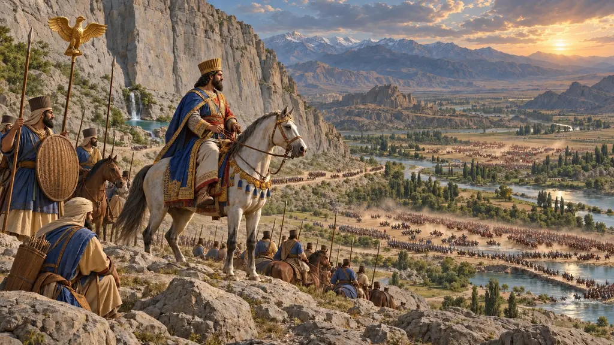
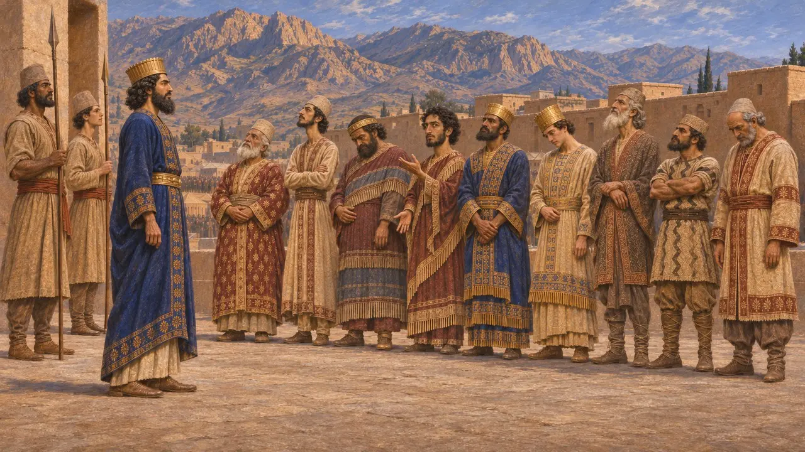
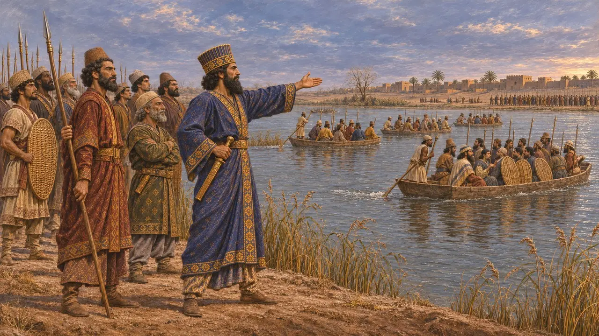
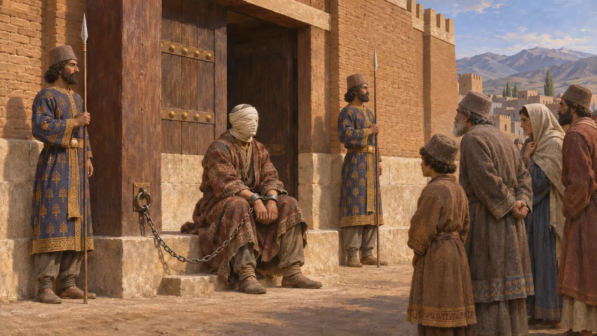
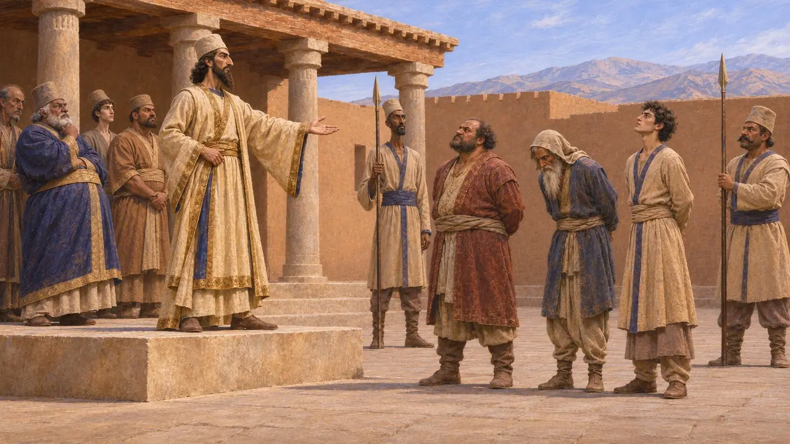
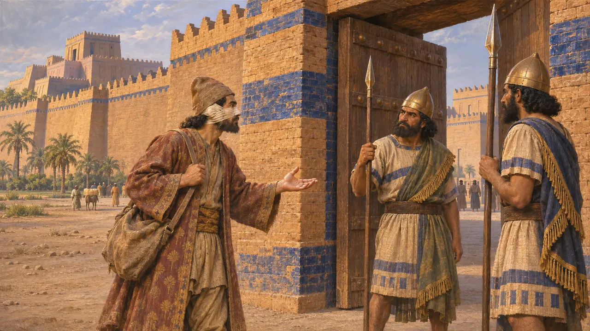

Encyclopédie › Batailles et événements

Les révoltes de 522-521 av. J.-C.
Soulèvements contre Darius dans tout l'empire, de l'automne 522 av. J.-C. à la fin de 521 av. J.-C.
Dans le jeu : Niveau 3 : Le Mensonge
Après que Darius et six nobles perses eurent tué en septembre 522 av. J.-C. l'homme qui régnait sous le nom de Bardiya, des provinces de Babylone à la Médie, à l'Élam, à la Perside et à la Margiane se soulevèrent sous leurs propres rois. Darius et ses généraux les écrasèrent en un an environ. Il fit graver le récit à Behistun comme preuve qu'Ahuramazda lui avait donné le trône, et il demeure la principale source sur ces événements.
Dans le jeu : Le niveau de Bagastana (522-521 av. J.-C.) s'articule autour de ces soulèvements. Les « neuf rois captifs » du jeu reprennent la vantardise de Darius, mais d'après son propre texte, Martiya fut tué par les Élamites et Gaumata fut abattu sur-le-champ.

Dix-neuf batailles et neuf rois
Dans les sourcesDans le résumé du texte de Behistun, Darius affirme que, dans la seule et même année qui suivit son avènement, il livra dix-neuf batailles et renversa neuf rois. Il les nomme : Gaumata en Perse, Acina et Martiya en Élam, Nidintu-Bel et Arakha à Babylone, Fravartish en Médie, Citrantakhma en Sagartie, Frada en Margiane et Vahyazdata en Perse. Chacun d'eux, dit-il, a menti au peuple.
DB §52

Une guerre menée sur de nombreux fronts
Dans les sourcesDarius marcha lui-même sur Babylone, battit Nidintu-Bel sur le Tigre et à Zazana en décembre 522 av. J.-C., et prit la ville. Il envoya des chefs ailleurs : Hydarnès en Médie, Dadarshi et Vaumisa en Arménie, des troupes à son père Hystaspe en Parthie, le satrape de Bactriane contre la Margiane, et Artavardiya contre Vahyazdata. Darius vainquit Fravartish à Kunduru en 521 av. J.-C., et Intaphernès prit la Babylone d'Arakha à la fin de cette année-là.
DB §§16-50

Châtiment rendu public
Dans les sourcesDarius fit de sa cruauté un avertissement. Fravartish eut le nez, les oreilles et la langue coupés et un œil crevé, fut gardé enchaîné à la porte du palais afin que tous puissent le voir, puis fut empalé à Ecbatane. Ciçantakhma connut une fin semblable à Arbèles. Le texte était destiné à circuler : des fragments d'une version babylonienne subsistent à Babylone, et une copie araméenne sur papyrus a été retrouvée à Éléphantine, en Égypte.
DB §§32-33; Aramaic version from Elephantine

Usurpateur ou restaurateur
ContestéDarius traite chaque rebelle de menteur dressé contre un roi légitime, or il venait de s'emparer du trône en tuant l'homme qui régnait sous le nom de Bardiya, que certains historiens tiennent pour le véritable fils de Cyrus. Les spécialistes débattent aussi de la façon dont son « une année » s'accorde avec des dates qui vont de l'automne 522 av. J.-C. à la fin de 521 av. J.-C., peut-être une année allongée par un mois supplémentaire. Les décomptes de morts et de prisonniers de la version babylonienne sont les chiffres du Roi lui-même et doivent être maniés avec prudence.
P. Briant, From Cyrus to Alexander, 2002; A. Kuhrt, The Persian Empire, 2007

Zopyre aux portes de Babylone
Légende tardiveHérodote raconte que Babylone tint tête à Darius pendant plus d'un an et demi. Puis le noble perse Zopyre se coupa le nez et les oreilles, passa chez les Babyloniens en feignant d'être un transfuge et ouvrit les portes. Le récit est construit comme une histoire de loyauté envers le Roi, et les historiens en doutent. Il peut aussi relever d'une révolte babylonienne ultérieure plutôt que de 522-521 av. J.-C.
Herodotus 3.150-160
Sources
- Behistun inscription (DB), especially §§10-52
- Herodotus 3.61-88 and 3.150-160
- R. Schmitt, The Bisitun Inscriptions of Darius the Great: Old Persian Text, 1991
- A. Kuhrt, The Persian Empire: A Corpus of Sources from the Achaemenid Period, 2007
- P. Briant, From Cyrus to Alexander, 2002